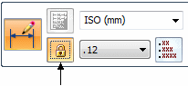
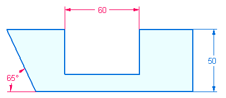
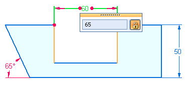

Locked sketch dimensions
Sketch dimensions are placed as driving. A driving dimension is colored red, and displays a lock icon on the dimension editing command bars. A driving dimension cannot change unless it is edited directly. As sketch geometry is modified, a driving dimension does not change.
Change a dimension to driven by selecting the dimension and then clicking the Driving/Driven Dimension button on the command bar. A driven dimension is colored blue and displays an unlocked icon. A driven dimension value cannot be selected for editing. It must be changed to a driving dimension to change its value directly.


To change a dimension value of a driving dimension, click the dimension and enter a new value.
